Part 3: First job to level 20 (Magician)
Part 3 of the leveling guide. Source-backed draft; not a measured minimum-time route.
About this guide
Status: source-backed draft, not a measured fastest route. It starts where Part 2 ends: a new level-10 Magician in the Magic Library. It ends in Henesys at level 20.
Ellinia and Henesys have six quests open between levels 10 and 16, plus a delivery to Estelle. They are done in two short visits: Wing and Bruce at level 10, then everything else in one loop at level 16.
When no quest is left at your level the guide says so with a "Go grind" step: grind anywhere you can kill quickly without competing for monsters, then continue. Steps marked SCROLL use the Return Scrolls that Wing and Bruce give you instead of walking.
Reading the images: green circles mark the NPC to talk to; blue circles mark the portal to enter. Each image shows your current map. Artwork is from NiaMeowDB; the highlights were added locally.
1. Ellinia: Wing the Fairy's homework0 / 5
Map, completion and why
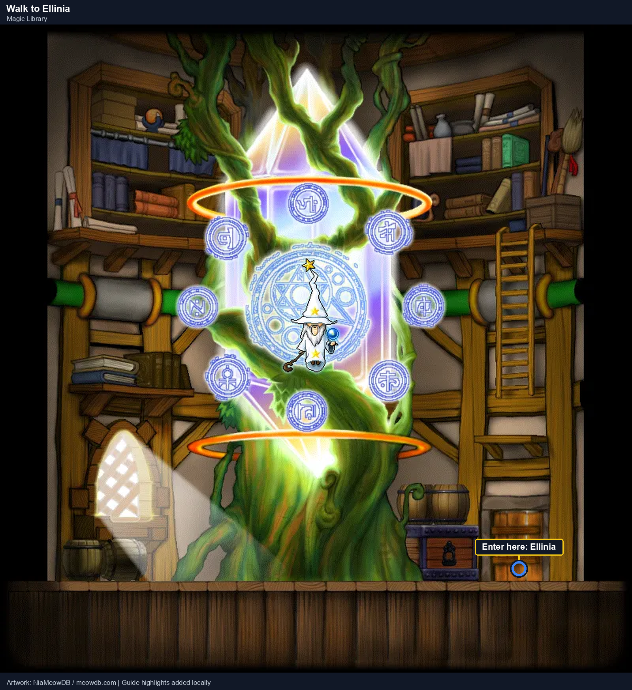
Complete when: You arrive on Ellinia.
Why: Wing the Fairy is in Ellinia, below the Magic Library.
Map, completion and why
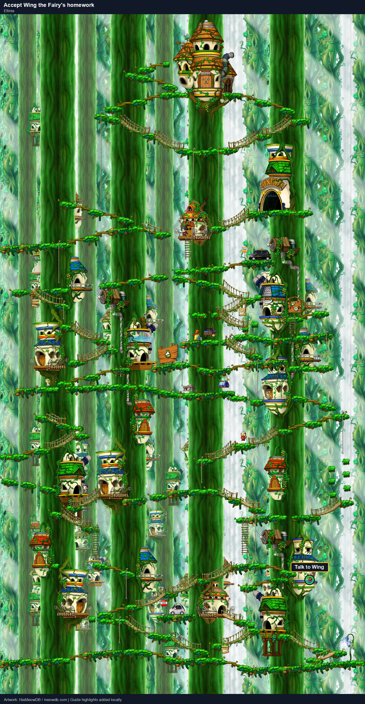
Complete when: I Need Help on My Homework! is active in your quest log.
Why: It is the only quest in Ellinia open at level 10, and the monsters for it live one map away. Its reward includes 2 Return Scrolls to Ellinia, which save two long walks later in this part.
Sources: I Need Help on My Homework!
Map, completion and why

Complete when: You arrive on The Field South of Ellinia.
Why: Dark Stumps and Slimes, the monsters for Wing's items, are on the next map.
Map, completion and why
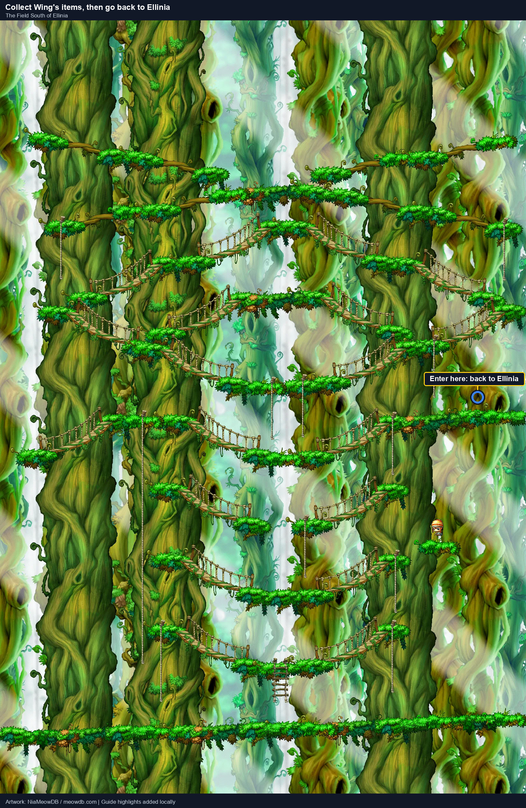
Complete when: You arrive on Ellinia.
Why: The Field South of Ellinia has 13 Dark Stumps and 18 Slimes, the closest map with both.
Unresolved: Drop chances for Leaves, Squishy Liquids and Slime Bubbles are not published.
Sources: The Field South of Ellinia · I Need Help on My Homework!
Map, completion and why
Complete when: I Need Help on My Homework! is complete and you have 2 Return Scrolls to Ellinia.
Why: The scrolls are used later in this part to come back to Ellinia without walking.
Sources: I Need Help on My Homework!


2. Walk to Henesys0 / 7
Map, completion and why

Complete when: You arrive on The Field South of Ellinia.
Why: Henesys is seven maps west of Ellinia. The walk is free and passes the hunting maps used later.
Map, completion and why
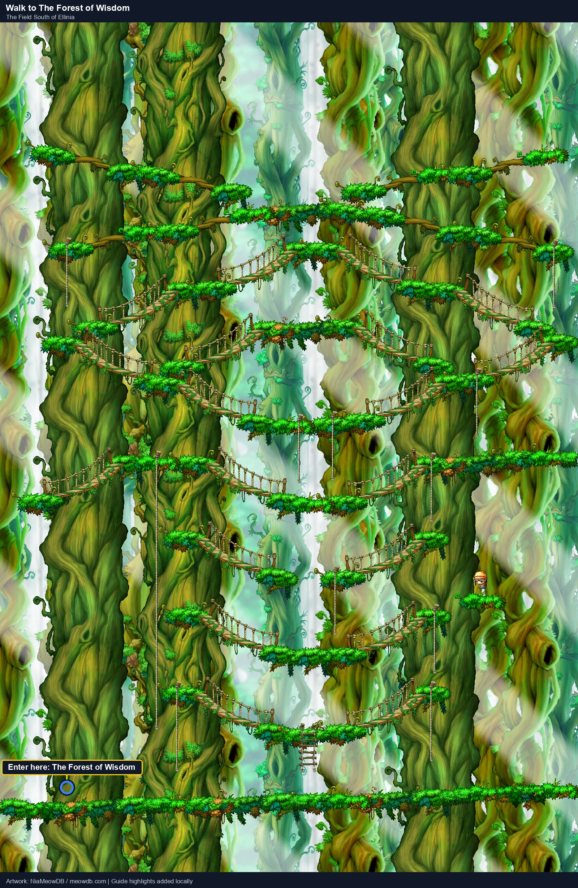
Complete when: You arrive on The Forest of Wisdom.
Why: Keep heading west toward Henesys.
Map, completion and why
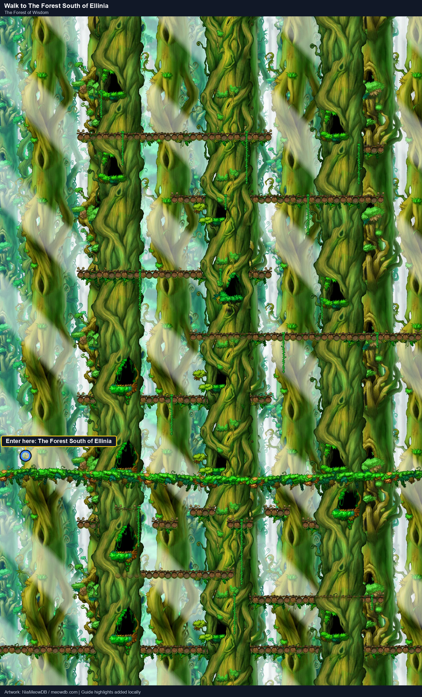
Complete when: You arrive on The Forest South of Ellinia.
Why: Keep heading west toward Henesys.
Map, completion and why
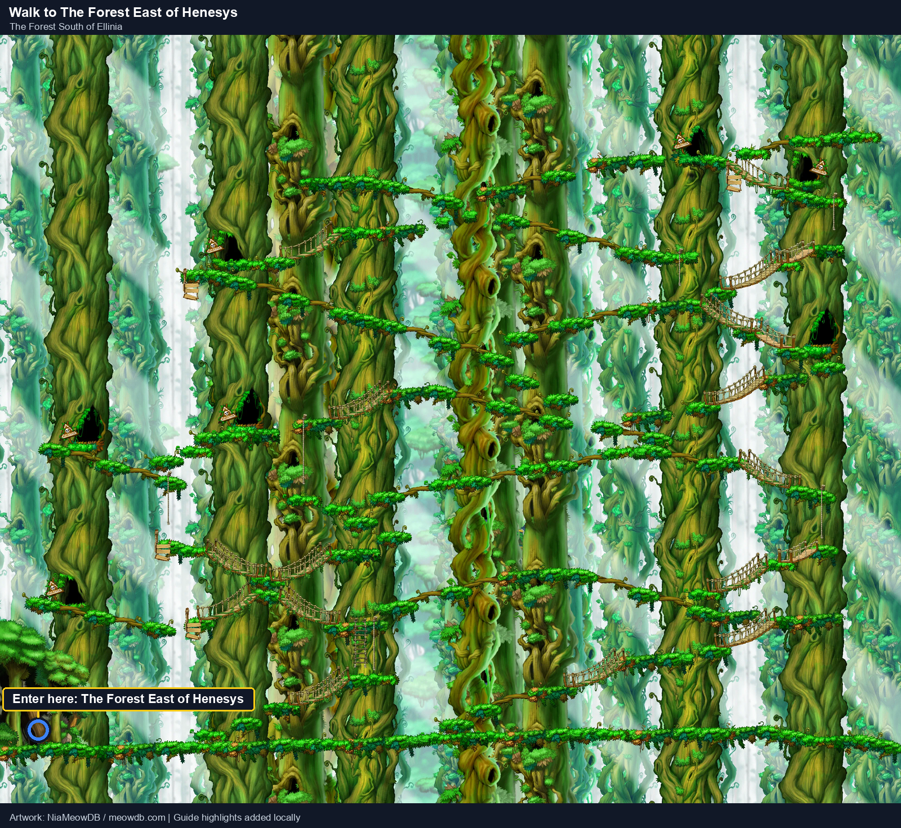
Complete when: You arrive on The Forest East of Henesys.
Why: Keep heading west toward Henesys.
Map, completion and why
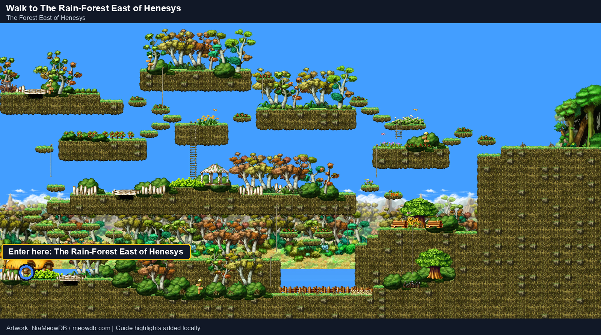
Complete when: You arrive on The Rain-Forest East of Henesys.
Why: Keep heading west toward Henesys.
Map, completion and why
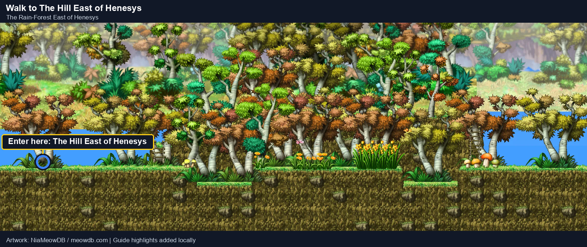
Complete when: You arrive on The Hill East of Henesys.
Why: Keep heading west toward Henesys.
Map, completion and why


3. Henesys: Bruce's mushroom study0 / 5
Map, completion and why
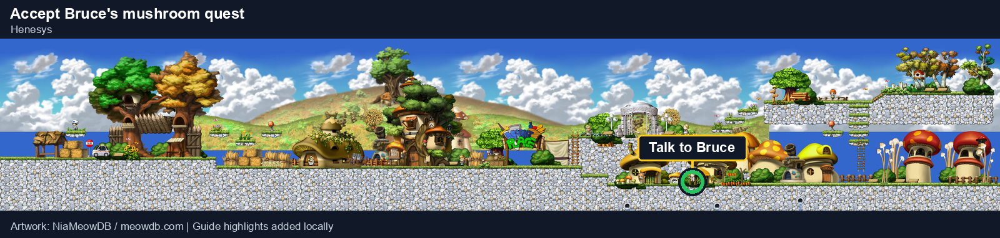
Complete when: The Reason Behind the Mushroom Studies is active in your quest log.
Why: It is the only other quest open below level 14 in Ellinia and Henesys.
Map, completion and why
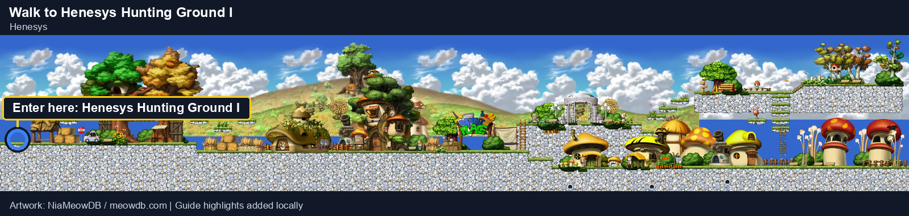
Complete when: You arrive on Henesys Hunting Ground I.
Why: Henesys Hunting Ground I, next to Henesys, has both Shrooms and Orange Mushrooms.
Map, completion and why
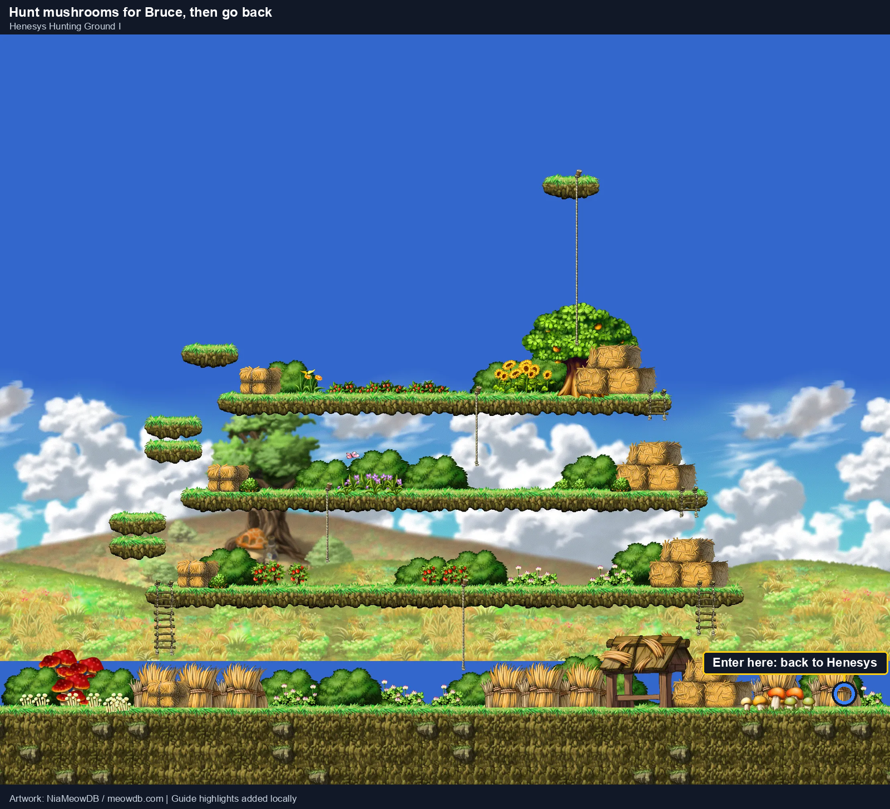
Complete when: You arrive on Henesys.
Why: It is the nearest map with both mushrooms (10 Shrooms and 5 Orange Mushrooms).
Unresolved: Drop chances for Mushroom Spores and Orange Mushroom Caps are not published.
Sources: Henesys Hunting Ground I · The Reason Behind the Mushroom Studies
Map, completion and why
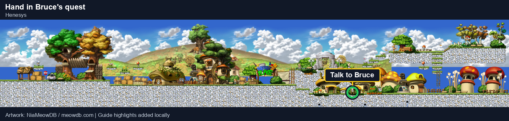
Complete when: The Reason Behind the Mushroom Studies is complete and you have 2 Return Scrolls to Henesys.
Why: Bruce's follow-up quests need a trip to Perion, which this part does not make. The scrolls are used later to come back to Henesys.
Completion and why
Complete when: You are level 16 and back in Henesys.
Why: The next quests open at 14, 15 and 16. Waiting until 16 lets you take all of them in one loop through Henesys and Ellinia instead of three trips.


4. Henesys: Mrs. Ming Ming and Pia0 / 4
Map, completion and why
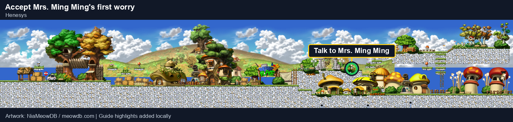
Complete when: Mrs. Ming Ming's First Worry is active in your quest log.
Why: Ribbon Pigs and Slimes share a map east of Henesys, on the same trip as Pia's Blue Mushrooms.
Sources: Mrs. Ming Ming's First Worry
Map, completion and why
Map, completion and why
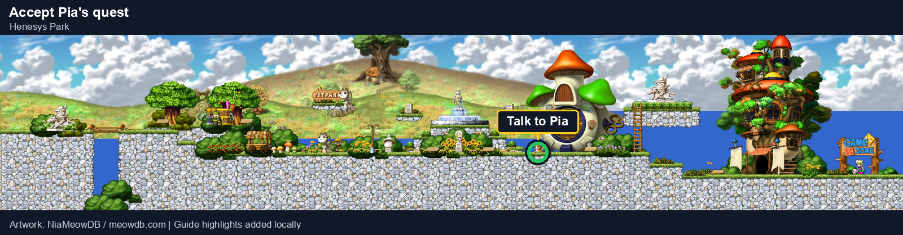
Complete when: Pia and the Blue Mushroom is active in your quest log.
Why: Blue Mushroom Caps come from the same trip as Mrs. Ming Ming's items; the Green Mushroom Caps come from the Green Mushroom hunt for Shane later.
Sources: Pia and the Blue Mushroom
Map, completion and why


5. East of Henesys: Ribbon Pigs, Slimes and Blue Mushrooms0 / 5
Map, completion and why
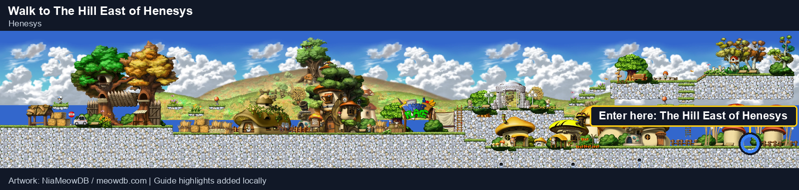
Complete when: You arrive on The Hill East of Henesys.
Why: Head east toward the Forest East of Henesys.
Map, completion and why
Map, completion and why
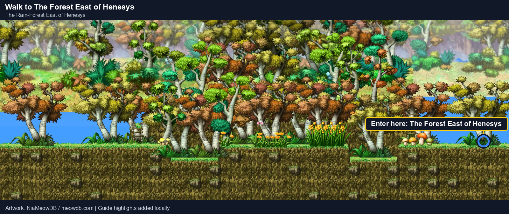
Complete when: You arrive on The Forest East of Henesys.
Why: The Forest East of Henesys has Ribbon Pigs and Slimes, and the entrance to the Blue Mushroom Forest.
Map, completion and why
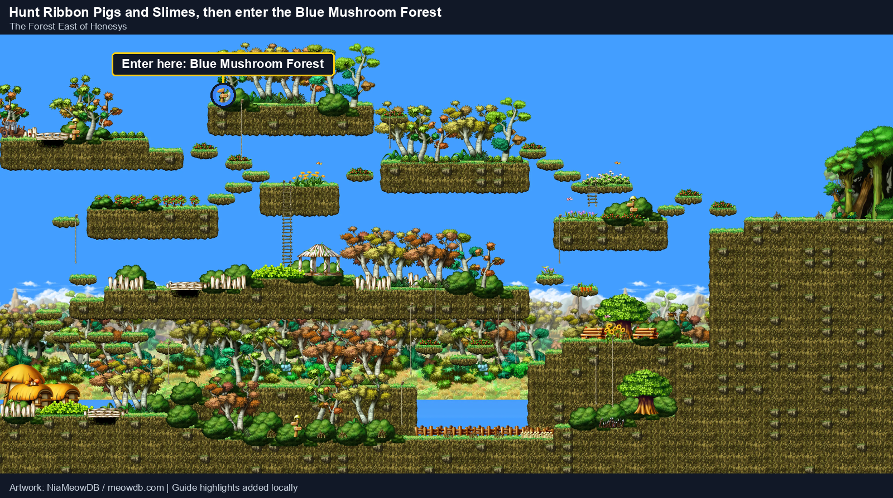
Complete when: You arrive on The Blue Mushroom Forest.
Why: This map has 11 Ribbon Pigs and 7 Slimes, and it is the doorway to the Blue Mushroom Forest.
Unresolved: Drop chances for Pig's Ribbons and Slime Bubbles are not published. The Blue Mushroom Forest also has 8 Slimes if you still need Bubbles.
Sources: The Forest East of Henesys · Mrs. Ming Ming's First Worry
Completion and why
Complete when: You arrive in Henesys.
Why: The Blue Mushroom Forest has 16 Blue Mushrooms, the most on any map near Henesys. The scroll replaces four maps of walking back.
Unresolved: The Blue Mushroom Cap drop chance is not published.
Sources: The Blue Mushroom Forest · Pia and the Blue Mushroom


6. Henesys: Mrs. Ming Ming's second worry0 / 2
Map, completion and why
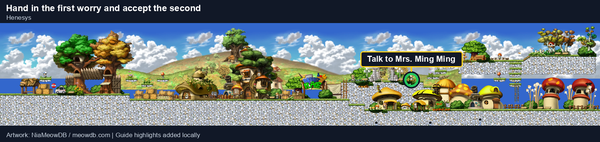
Complete when: The first worry is complete and Mrs. Ming Ming's Second Worry is active.
Why: Estelle stands on the Field South of Ellinia, next to Ellinia, where the rest of this part happens.
Sources: Mrs. Ming Ming's First Worry · Mrs. Ming Ming's Second Worry
Completion and why
Complete when: You arrive in Ellinia.
Why: Shane and Estelle are both next to Ellinia, seven maps away. The scroll from Wing skips the walk.

7. Ellinia: Shane's mushrooms and Estelle0 / 12
Map, completion and why
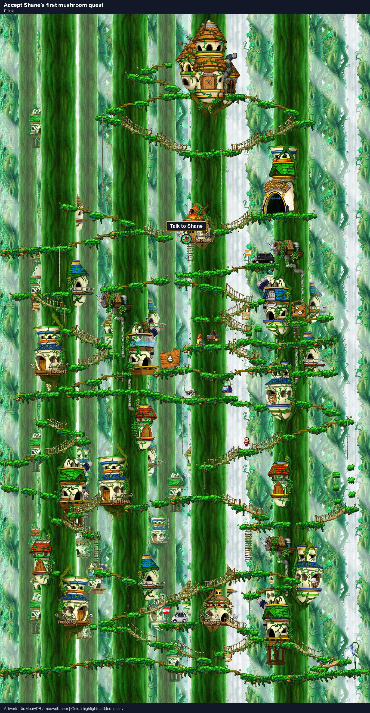
Complete when: How to Enjoy Mushrooms is active in your quest log.
Why: Accepting it before the hunt means the Green Mushroom kills count. Pia's Green Mushroom Caps come from the same hunt.
Sources: How to Enjoy Mushrooms
Map, completion and why

Complete when: You arrive on The Field South of Ellinia.
Why: Estelle is on the next map.
Map, completion and why
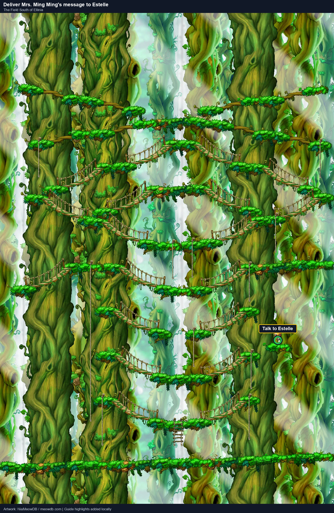
Complete when: Mrs. Ming Ming's Second Worry is complete.
Why: Estelle's next quest needs a Garnet, which this part does not cover, so the chain stops here.
Sources: Mrs. Ming Ming's Second Worry
Map, completion and why

Complete when: You arrive on The Forest of Wisdom.
Why: The Forest of Wisdom has 30 Green Mushrooms, the most on any nearby map.
Map, completion and why
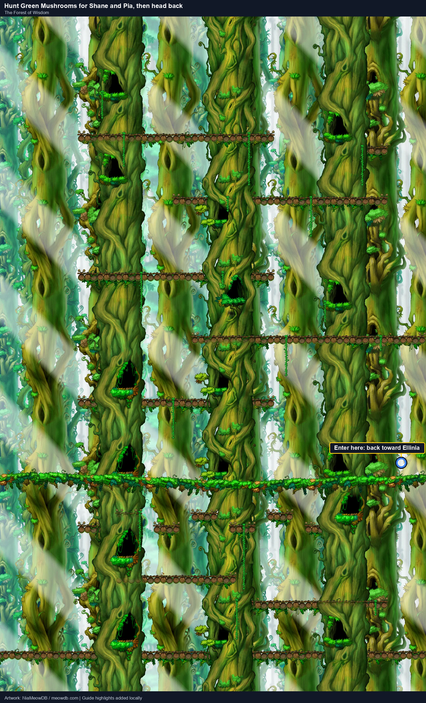
Complete when: You arrive on The Field South of Ellinia.
Why: Both quests take Green Mushroom Caps, so collecting Pia's here saves a second trip.
Unresolved: The Green Mushroom Cap drop chance is not published.
Sources: The Forest of Wisdom · How to Enjoy Mushrooms · Pia and the Blue Mushroom
Map, completion and why
Map, completion and why
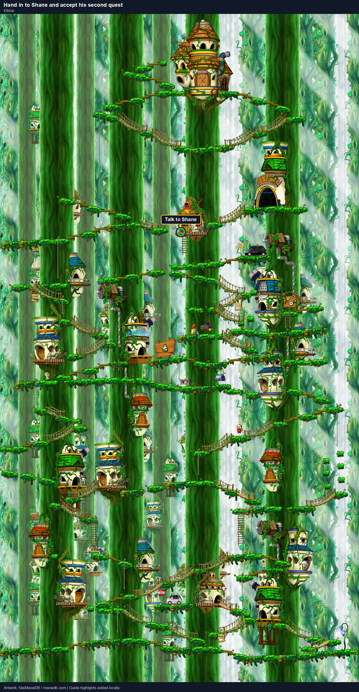
Complete when: How to Enjoy Mushrooms is complete and How to Enjoy Mushrooms Even More is active.
Why: The second quest unlocks only when the first is handed in. You already carry Lemons from Teo and Mrs. Ming Ming.
Sources: How to Enjoy Mushrooms · How to Enjoy Mushrooms Even More
Map, completion and why
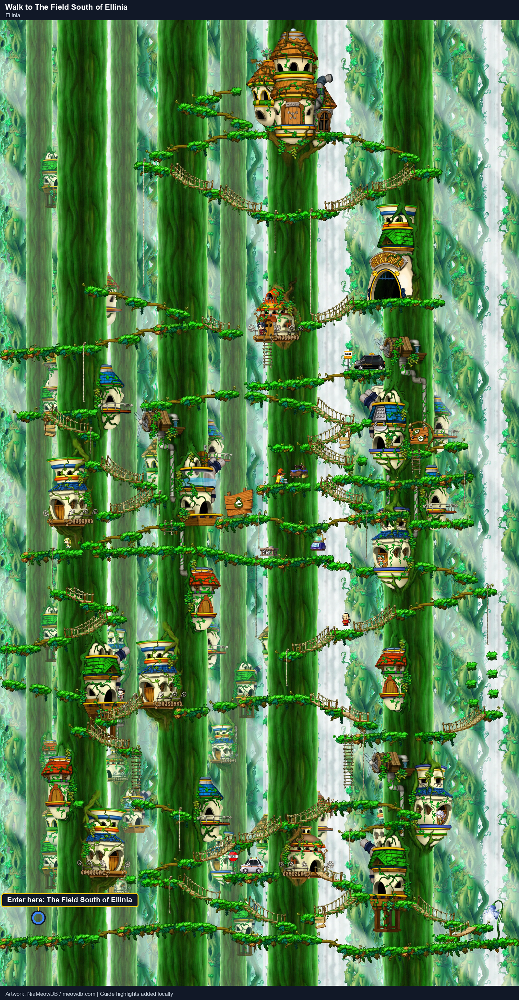
Complete when: You arrive on The Field South of Ellinia.
Why: Back toward the Forest of Wisdom.
Map, completion and why

Complete when: You arrive on The Forest of Wisdom.
Why: Back to the Green Mushrooms.
Completion and why
Complete when: You arrive in Ellinia.
Why: Same map as the first hunt. The scroll saves the two-map walk back.
Unresolved: The Green Mushroom Cap drop chance is not published.
Sources: The Forest of Wisdom · How to Enjoy Mushrooms Even More
Map, completion and why
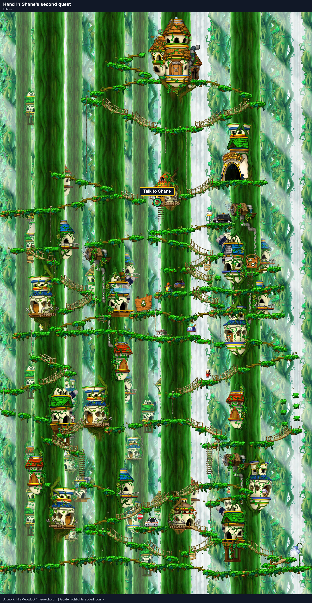
Complete when: How to Enjoy Mushrooms Even More is complete.
Why: That finishes every quest open in Ellinia below level 17.
Sources: How to Enjoy Mushrooms Even More
Completion and why
Complete when: You arrive in Henesys.
Why: Pia takes her hand-in in Henesys Park, seven maps away. Bruce's second scroll skips the walk.


8. Henesys: Pia, then grind to 200 / 4
Map, completion and why

Complete when: You arrive on Henesys Park.
Why: Pia is in Henesys Park.
Map, completion and why
Complete when: Pia and the Blue Mushroom is complete.
Why: This is the last quest in Ellinia and Henesys below level 17.
Sources: Pia and the Blue Mushroom
Map, completion and why

Complete when: You arrive on Henesys.
Why: Back to Henesys.
Completion and why
Complete when: You are level 20.
Why: The remaining quests below level 20 are in Kerning City, Perion and the Henesys dungeon. Quest rewards do not shrink at higher levels, so Part 4 picks them up together with the level-20 quests.

Next: Part 4 — Level 20 to second job
You are a level-20 Magician in Henesys. Part 4 will cover levels 20 to 30, the Kerning City and Perion quests, and the second job advancement. It is not written yet.
Route decisions and skips (5)
Walk from Ellinia to Henesys
The walk is seven maps and free. Players report cabs between towns cost 600 to 1,200 mesos, about all the mesos you have at level 10.
Grind to 16 before the second loop
Shane is in Ellinia and Mrs. Ming Ming and Pia are in Henesys. Doing them at 16 lets one loop and two pairs of Return Scrolls cover all five quests.
Kerning City and Perion quests left for Part 4
Both towns are 10 to 16 maps from Henesys. Quest rewards do not shrink with level, so doing them later, together with their higher-level quests, costs no XP and saves trips.
Skipped quests
Card and Omok pieces have no published drop rates, crafting and Estelle's Garnet need crafted items, and the party and jump quests are not hunting quests (player decision).
No set grinding spot
Servers are crowded, so the best place to grind is wherever you can hold a spot alone and kill monsters in a couple of hits. The guide marks each gap with a "Go grind" step.
Limitations
- Only Victoria Road maps and the quest pages for this route were collected. Kerning City, Perion and dungeon quests are compared only by distance.
- XP and mesos are tracked as guaranteed minimums: quest rewards plus required kills only. Part 2's minimum (level 10, 0 grind beyond it) is the starting point, so real play is ahead of these numbers.
- The source pages do not name the turn-in NPC for most of these quests. The guide hands them back to the giver, as their completion dialogue suggests.
- Return Scroll destinations are assumed to be the town in the scroll's name.